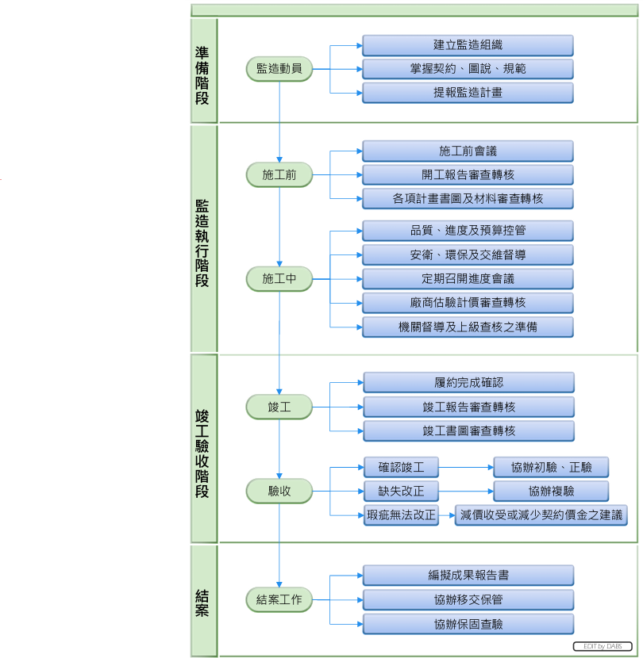
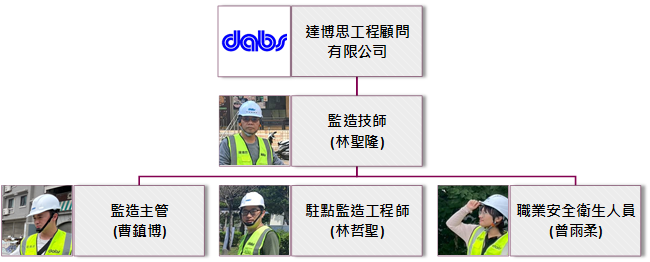
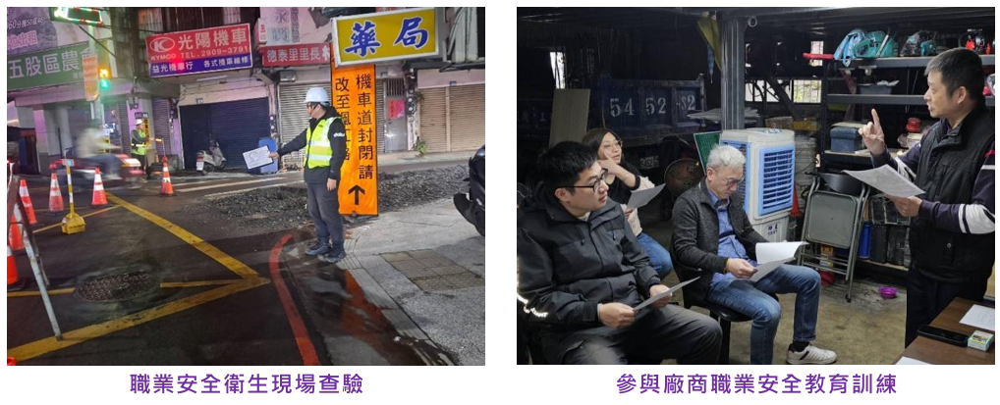
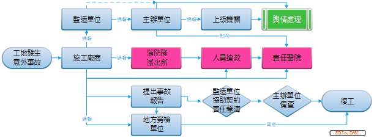

材料抽驗與施工抽查是維護施工品質的重要關鍵，對於材料抽驗，本公司堅持落實「先審後驗、先驗後用、詳實紀錄」之程序，對於施工檢驗停留點查驗，則遵守「具體量化、自檢後驗、逢點必查」之要求。本專案之材料抽驗及施工抽查流程圖，如圖所示。
監造技師、監造主管、駐點監造工程師及職安人員共同組成專案監造組織。
開工前完成計畫送審程序
施工前完成材料送審程序
管制各項材料檢驗頻率及結果
落實執行施工抽查並記錄
定期實施職業安全衛生查驗，並填具檢查紀錄表，督促廠商落實現場職業安全工作。另外為掌握廠商是否落實施工人員之職安訓練，本公司亦採不定期方式，參與廠商內部之職業安全教育訓練。
工地如不慎發生意外事故，則須立即啟動通報及處理機制，包含通報、救援、事故報告、輿情處理及責任釐清等。依據職業安全衛生法第37條第2項規定，勞動場所發生死亡、三人以上罹災或住院治療之一者，雇主應於8小時內通報勞動檢查機構；另依據工程契約規定，施工廠商需於事故發生後8小時內通報監造單位。工地意外事故通報及處理機制流程圖，如下圖所示。
